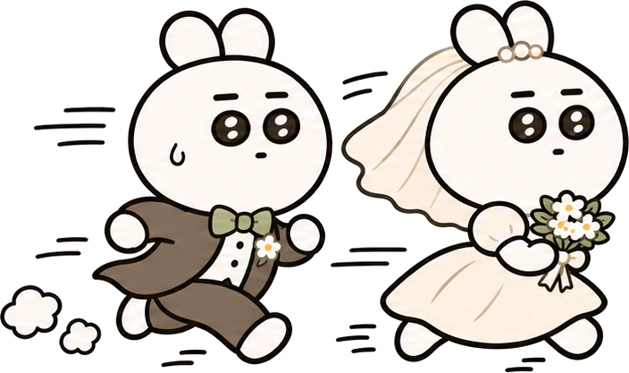
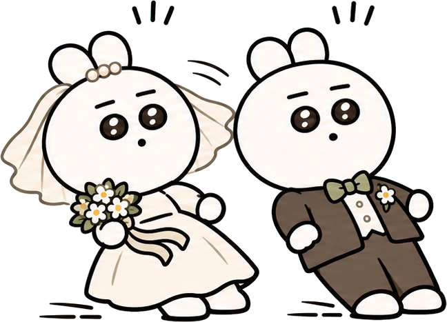
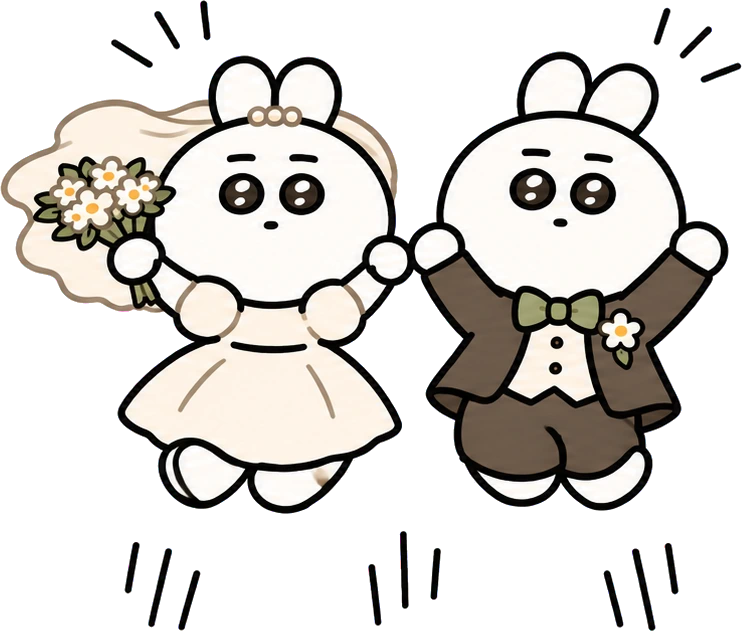

よりみち帖
ホーム
記事一覧
プロフィール
お問い合わせ



30代プレ花嫁の
結婚式までの準備ブログ
はじめての方へ
まずは「結婚が決まったら、何すればいい？」から
まずはこの記事から
新しい記事
結婚が決まったら、何すればいい？
結婚準備ロードマップ
いまどのあたり？ 順番に読めば、迷わず進めます
01
結婚が決まったら
話し合い・決める順番
記事あり
02
両家顔合わせ
日程・お店・しおり
ざっくり解説
03
入籍・手続き
婚姻届と名義変更
ざっくり解説
04
式場探し
見学のコツと比べ方
ざっくり解説
05
ドレス・準備
衣装・招待状・ゲスト
準備中
06
結婚式当日
当日の流れと振り返り
準備中
テーマから探す
結婚が
決まったら
01
両家
顔合わせ
02
入籍・
手続き
03
式場探し
04
ほかのブログ
こちらも、のんびり更新予定
ひとりおでかけ帖
愛犬お迎え帖